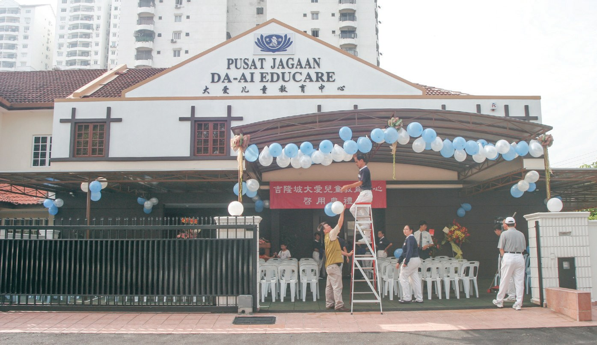
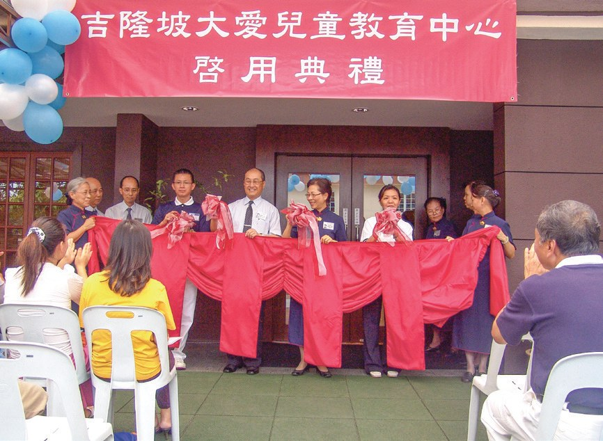
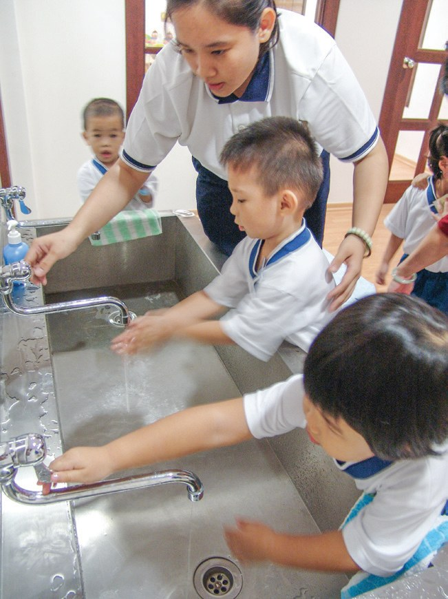
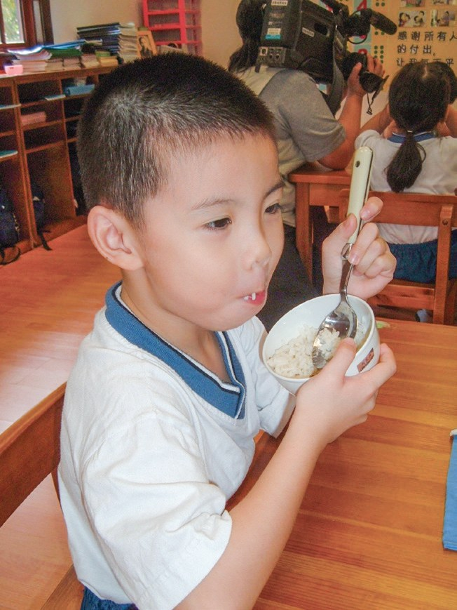
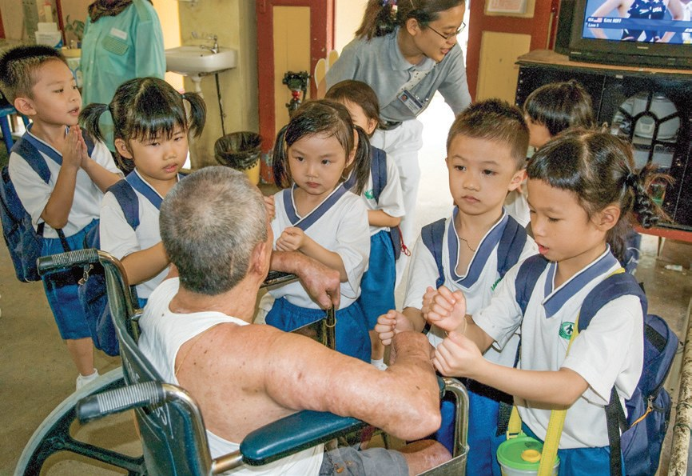
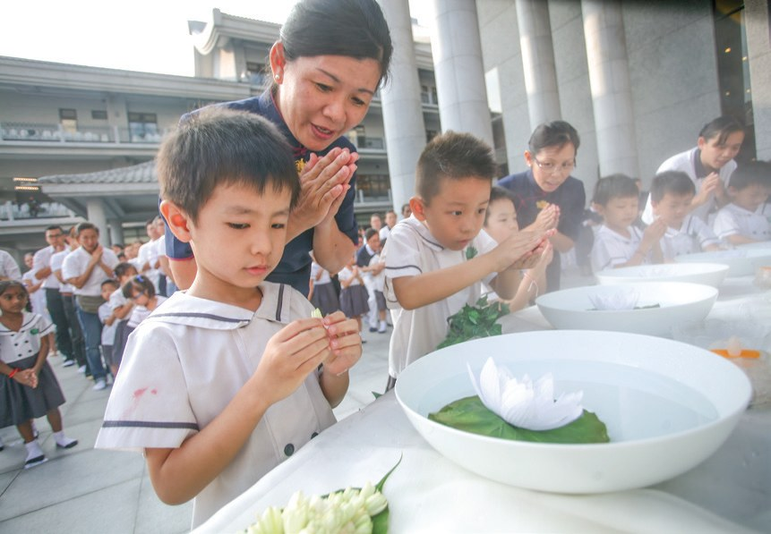
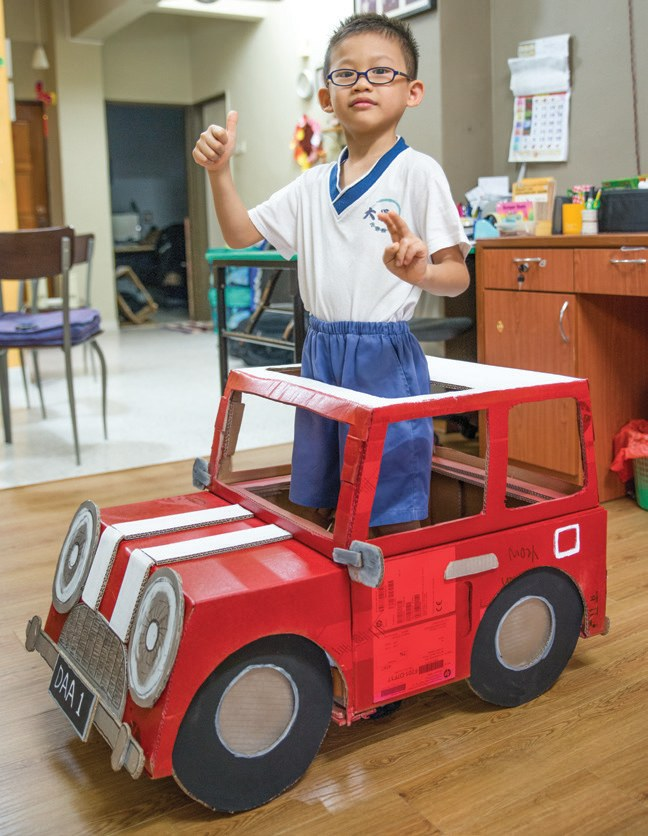
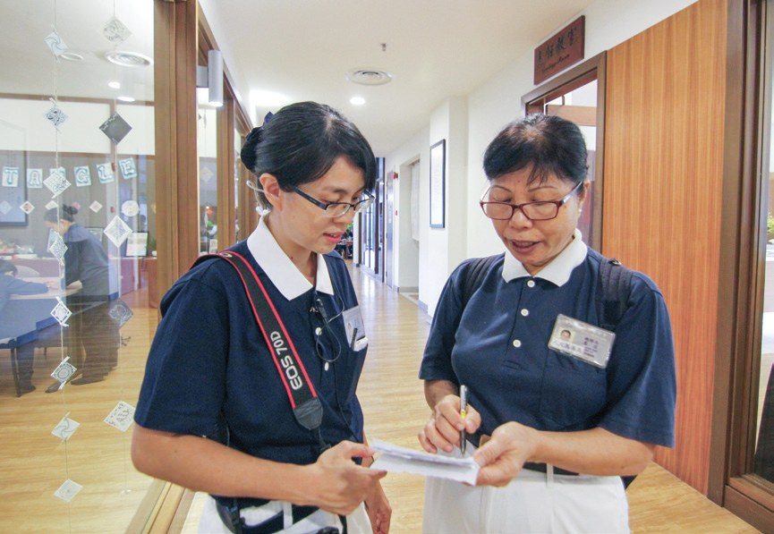
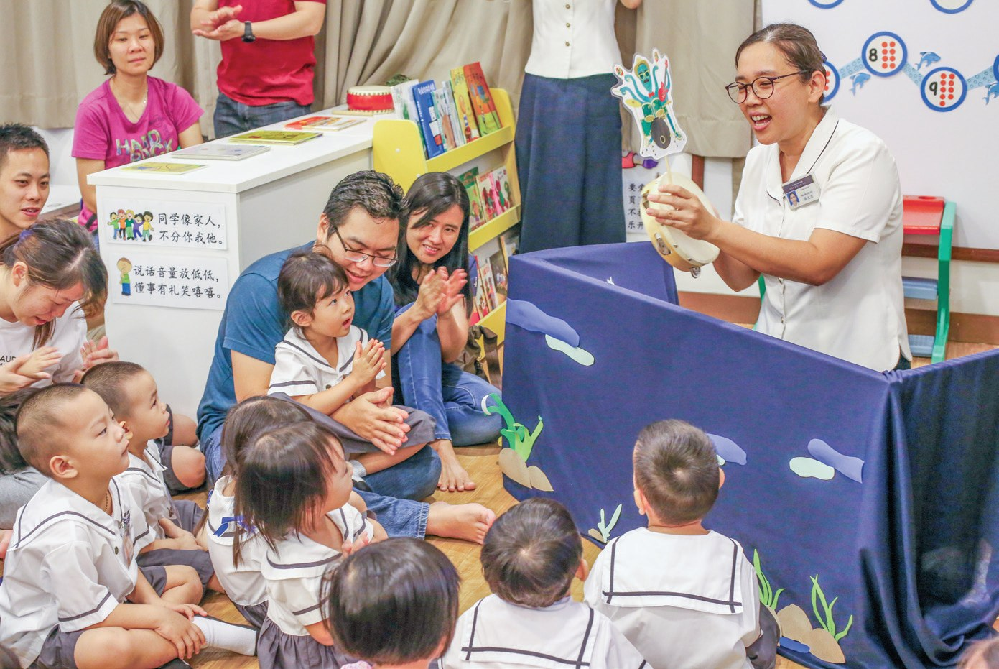

人文品格育幼苗
四歲的孩子，能教會大人什麼？

先別急著下結論，讀完再說說你的想法～
這一篇講大愛幼兒園：四到六歲的孩子在這裡學靜思語，也學擔水、吃鹽巴飯、躲在桌下體驗動物的感受。
後來，孩子回家提醒媽媽省水，還用一句靜思語，把傷心的媽媽拉了回來。
下面是原書的節錄，紅色底線是我們替你標出的轉折點。
讀之前：你覺得幼兒園最該教孩子什麼？
一間雙層排屋
寸土寸金的吉隆坡，誰願意借出一間屋？閱讀引導
馬來西亞的教育志業，要從幼兒園開始啟發孩子的愛心、同理心
上人期許・p.465慈濟幼兒教育希望孩子從小在愛的環境成長，並藉由靜思語的薰陶，培養良好行為，帶動家長認識慈濟
但要在寸土寸金的吉隆坡市中心找到適合的地點，並不容易。
在瞭解慈濟的教育理念及成立教育中心的困境後，無償提供班丹英達的雙層排屋給慈濟使用。

免費借出來！

廁所設備採用迷你馬桶、矮小洗手盆等，是專為四歲至六歲幼兒量身訂造。

都是小小的。
2007年1月1日，位於班丹英達的大愛兒童教育中心正式啟用，正式迎接第一批新生。

牆角都是白板
靜思堂裡，也有了一間幼兒園。閱讀引導
老師們為了不偏限孩子，因此在教室的矮牆角落都鋪上白板，讓幼童能盡情塗鴉。
孩子一定很開心。
2014年5月，位於甲洞的吉隆坡慈濟靜思堂園區成立了大愛幼兒園
幼兒教育不僅是傳授知識，更重要的是啟發幼童的良知。
一瓶水、一碗鹽巴飯
不只講道理，要孩子親身感受。閱讀引導

讓孩子們體驗挑著水桶，在校園中步行取水，並限制每人一天只有一瓶寶特瓶的水。
孩子們只能用一瓶水要清洗餐具、洗手等等，感受實際缺水的生活並不簡單。
夠用嗎？
在幫媽媽洗菜時，孩子還會提醒媽媽，剩下的水能澆花

提醒媽媽了！

老師們發現很多孩子有挑食習慣，於是特別設計珍惜食物的課程，以鹽巴飯代替營養午餐
帶領孩子困在桌下待15分鐘，體驗動物被圈養的感覺
孩子們希望大家都能愛護動物，紛紛和老師表達自己茹素的願望。
三個月過後，他堅定地表示要生生世世茹素，至2015年，已升上中學的他依舊茹素
上了中學還在守！

前往雙溪毛糯痲瘋病院送愛，幫阿公阿嬤捶背

賣繪本送玩具
斗湖的孩子沒有國籍，不能上學。閱讀引導
當地居民沒有公民身分，工作困難造成生活困境，孩子也無法正常上學
大家存下零用錢投入竹筒，孩子們也提議要自製玩具贈送
孩子們在老師的協助下拍攝繪本宣傳短片，自編、自導、自演、自彈、自唱

自己拍宣傳片！
猜一猜閱讀引導
孩子們做的繪本，最後賣出了多少本？
- 20套五粒子p.474
- 26套哈芝棋p.474
- 103本繪本p.474
孩子是貴人
一個小環保大使，一位被女兒喚醒的媽媽，一位最資深的老師。閱讀引導

隨時提醒家人節能減碳，愛惜水資源，完全是一位環保大使。
「看到有人買肉或殺生時，會感覺到很難過。」
林子斌說・p.4752012年，黃旻慧的母親因癌症復發過世，她後悔沒能及時行孝，每每回想起來便覺自責愧疚，深陷憂鬱而難以走出。
她走不出來……
「用父母給的身體做好事，就是最好的報恩」，她猛然醒悟，重新投入慈濟活動。

「孩子是我的貴人和善知識，接引我走進慈濟的門欄。」
黃旻慧說・p.476把媽媽拉回來。
黃文思的第一堂靜思語課程總是「微笑最美」，她鼓勵孩子們帶著微笑來上學。
到校第一件事情就是擁抱老師，她也以微笑來迎接、好好抱抱他們，就像抱自己的孩子一樣。
但是不知苦的人生，並不是福，知福、惜福之心，要從小開始培養。
上人開示・p.477
停一停：誰讓你記住了？閱讀引導
選一位你印象最深的人。沒有標準答案。
有孩子許願生生世世茹素，有媽媽被女兒的靜思語喚醒，有老師每天抱抱孩子。哪一位讓你最有感覺？

一起回頭看看吧～
回望
依本章原文整理，每一條都標了原書頁碼。閱讀引導
背後原因
為什麼用體驗來教

小川跟孩子講道理就好，為什麼要讓他們親自擔水？
- 啟發良知
幼兒教育不僅是傳授知識，更重要的是啟發幼童的良知。p.469
- 親身感受
慈濟幼兒教育著重親身感受、實際體驗。p.469
- 帶回家裡
孩子們回家和父母分享水資源得來不易。p.470
後續發展
大愛幼兒園一路走來

小禾從一間排屋到兩間幼兒園，經過了多少年？
- 2001.6
馬六甲大愛幼兒園成立。p.465
- 2004.10
郭家坤夫婦參加實業家生活營。p.466
- 2007.1.1
班丹英達教育中心啟用。p.467
- 2013.1
統一定名為「大愛幼兒園」。p.467
- 2014.6
甲洞大愛幼兒園正式開課。p.468
- 2020
孩子們募心募愛關懷斗湖。p.473
孩子教大人
小小善種影響了家人
小禾孩子學到的，後來影響了誰？
- 第一圈媽媽
孩子提醒媽媽，剩下的水能澆花。p.471
- 第二圈長輩
林子斌向身邊長輩及大人勸素。p.474
- 第三圈黃旻慧
女兒的一句靜思語，讓她重新投入慈濟。p.475
以上只整理本章寫到的事；書裡沒寫到的，我們不替它下結論。
回頭看讀前的選擇閱讀引導
孩子們一天只有一瓶水（p.470）；老師以鹽巴飯代替營養午餐（p.471）；孩子們存零用錢幫助無國籍孩童（p.473）。大愛幼兒園先教的，是生活和愛心。
到底是誰在教誰？
只有你自己看得到喔！
準備好了就一起出發～